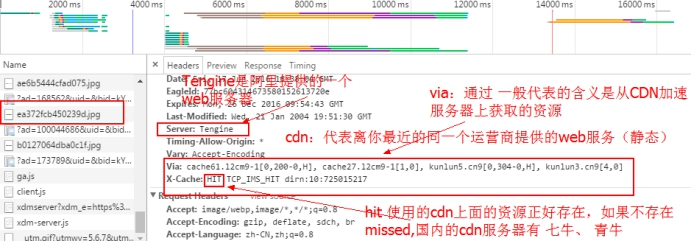

Nginx简介
Lamp(Linux + Apache + MySQL + PHP)架构概述
LAMP（Linux- Apache-MySQL-PHP）网站架构是目前国际流行的Web架构，该架构包括：Linux操作系统，Apache网络服务器，MySQL数据库、PHP。所有组成产品均是开源软件，很多流行的商业应用都是采取这个架构。
LAMP具有通用、跨平台、高性能、低价格的优势，因此LAMP无论是性能、质量还是价格都是企业搭建网站的首选平台。在国内可以说每一个公司都有使用LAMP这种架构，可以说它在国内互联网公司中的占有率基本上达到100%。
对于大流量、大并发量的网站系统架构来说，除了硬件上使用高性能的服务器、负载均衡、CDN等之外，在软件架构上需要重点关注下面几个环节：使用高性能的操作系统（OS）、高性能的网页服务器（Web Server）、高性能的数据库（Database）、高效率的编程语言等。
注意：现在的M有可能指的是MariaDB，它是MySQL的一个分支。现在的P有可能使用Python。
C10K问题
目前的我们正处于web2.0的互联网的时代，传统的lamp架构已经很难承载目前的访问流量，同时C10K的问题的产生，这个时候我们就不得不使用更加优秀的架构来支撑业务。这个时候，俄国的一个程序猿根据现有的互联网场景、以及结合现在的开发技术和硬件，设计出了一个非常厉害的web服务器软件Nginx，由于Nginx是为了访问量而设计的服务器。在最早的时候Nginx服务器并不支持PHP的，是后来加入了FastCgi才开始支持PHP的。
什么是C10K的问题？
答：在web2.0时代(信息为主，是无法体现价值的转义 web3.0的时候就是目前最火的区块链技术，就是为了价值转移而存在)（以社交类型网站兴起的时候开始计算，51博客、校内）主要是以动态请求为主，静态请求为辅。这个时候由于早先web服务器的设计主要是为了完成静态请求，这个时候对动态请求就显得有点乏力，无法支持大的动态请求。互联网上的一些就开始开发新的web服务器，以来适应新的web2.0时代。
当一个web网站的请求的并发数达到10k（同1s之内大概同时存在1w请求来请求web服务器），这个时候整个网站的架构都要进行重新设计。这个就是著名的C10K问题。并且目前互联网上已经出现C100K 甚至C1000K的问题的出现。
Nginx服务器简介
nginx是一个web服务器；类似Apache软件。这是由俄国人开发的一个软件。其早期开发的这个软件主要是用于邮件代理。后面才转换为web服务，只能做静态的web服务器和负载均衡器。
中文社区：http://www.nginx.cn/
书籍推荐：《实战nginx》、《决战Nginx》
张宴-httpsqs队列服务， 是国内最早将Nginx软件引入到新浪。
nginx 的使用:
a. 邮件代理服务器，基本不再使用，最早期的功能，后来由于web领域做的更好
b. 静态的web服务器（1u的服务器，大致可以处理的并发数 3-5w之间。apache的并发3-5k左右）
c. 负载均衡器（集群）
了解Nginx软件内部的架构处理
答： Nginx软件启动的时候会启动一个master进程（管理），在启动一个worker进行（主要是提供web服务）。master主进程是不做事的，主要是负责进程的产生和管理，以及配置文件的读取、日志进程管理、缓存进程管理…
Nginx可以这样理解，在内部是一个worker进程处理多个用户的请求，并且在处理请求达到一定的数量之后，会被master进程kill掉，然后在重新的启动一个worker进程（只要是为了防止内存的泄露问题）
Nginx好的特性：
a. 支持平滑升级（热部署）：在不关闭服务的情况下可以升级到其他的Nginx版本。（erlang是专门做热部署，一般在游戏领域或者银行领域使用这门语言）
b. 支持动态配置文件的读取（不关闭服务的情况可以重新的加载配置文件）
Nginx和Apache
我们需要知道==Nginx的产生并不是为了取代apache软件==，而是为了相互配合，使得网站架构更加的牢固。
区别
nginx和apache的软件底层架构不一样。Nginx的并发性能要比apache好很多，nginx属于轻量级服务器软件，apache属于重量级软件，nginx在处理静态页的效率要比apache好很多；apache在安全性要比nginx要好，apache在处理动态页面上的效率要比nginx高。
运行模式不同
php在apache环境下，运行的是php5模块方式运行的，由于是apache去加载php5模块，所以每次修改了php配置文件需要重启apache；
php在nginx模式下，php运行的时候使用的是php-fpm方式进行运行，这个方式会创建服务（端口是9000），因此在nginx下修改了php配置文件只需要重启php-fpm服务即可。
常见web服务器分类
- apache软件：一般在Linux下叫做httpd，最先是不使为了提供web服务，是为了解决资源共享的问题，最早使用应该是在军方的信息共享里面。(2.2 2.4版本)。重量级 ，设计成是模块化，但是它的模块不是热插拔的，就是说这么模块必须在编译安装的时候进行选择 ，后期要加，要重新编译。
nginx：轻量级的web服务器，
轻内核的web服务器，众多的其他的特性需要其他的模块进行提供(1. 官方很多模块 2. 第三方模块，互联网上广大开源爱好者，国内的淘宝为其提供很多的模块，并且有部分的模块已经被官方进行收录)。【国内前端的力量基本都是在阿里，阿里最先提出大前端，全栈(js 全栈)也是阿里提出来。full stack】
- IIS：Windows下的一个web服务器，常见的和 sql server 已经和 windows server 一起使用，并且都是图形化配置。
- Lighttpd：主要是用来提供图片服务，主要是在推广上做的不好。早年豆瓣基本都是使用它。
- tomcat：Java里面的一个web服务器容器。
国内基于Nginx的二次开发
介绍两个国内基于Nginx做了二次开发的版本：
tengine：这个是淘宝基于Nginx做了二次开发，运用到双11 、天猫商城上面进行了检验，产品是非常的优秀。并且在上面增量很多的功能模块，提供了DSO特性。
openresty：这个产品是之前淘宝里面的一个叫做章宜春的大牛基于Nginx做了二次开发，设计出来。在Nginx的基础上面引入 lua 解释器，可以让Nginx在不使用第三方的脚本解释器的情况下，自己就可以完成动态请求。（openresty = nginx + lua）
- lua是由一个巴西人开发出来了一门脚本语言，专注于游戏领域的开发。lua是后端语言。
- cocos2d-lua 专门做游戏开发的，还有其它，如，cocos2d-js\C++
- lua火起来的原因是国内一款《大话2》，其背后的推动着是前网易的 云风（吴云洋）。（国内游戏基本上都认识这个人，天才）
总结：上面的这两个产品在国内使用的更多。成熟的解决方案就更多，文档更加符合国内情况。
哪里在使用这些web服务器？
目前在全球T1000的网站里面，Nginx已经首当其冲。全球市场还是Apache老大哥。
可以通过抓包分析
豆瓣

搜狐
后期找工作可以可以尝试去抓包分析网站使用的大致的技术，然后根据该技术有选择性的简历。
Nginx安装
使用yum安装
1
yum install -y nginx
使用源码编译（lnmp架构）
目录结构
安装nginx软件
- 使用ftpd客户端进行上传操作
- 把所有的保存copy到/usr/local/src目录下
复制后
由于nginx依赖pcre软件包，所以需要先安装pcre包
a. 解压
b. 编译和安装一起
注意：pcre包安装的时候不需要指定安装路径 –prefix
安装nginx软件
a. 解压nginx安装包

b. 进入后，编译和安装
nginx安装的时候指定了安装的路径(/usr/local/nginx)
- 安装后的目录结构
- 启动服务
- 查看服务是否正常启动
进程查看方式
端口查看方式
完成lnmp架构
安装php的php-fpm运行模式。在php-5.3.28以后的版本默认里面就存在php-fpm模块，只需要在编译安装php的时候，启用这个模块即可。在编译configure的时候，指定一个选项 –enable-fpm
- 解压php源码包
- 进行目录，编译安装
收集操作系统的信息（主要是检测操作的位数，编译器是否存在）
- 编译和安装（主要是把c语言的文件转换机器语言；安装把对应生成的二进制的命令复制到指定的安装目录里面）
注意：在编译的过程中，可能出现如下的错误
可以使用如下命令进行解决
1 | yum -y install make apr* autoconf automake curl-devel gcc gcc-c++ zlib-devel openssl openssl-devel pcre-devel gd kernel keyutils patch perl kernel-headers compat* mpfr cpp glibc libgomp libstdc++-devel ppl cloog-ppl keyutils-libs-devel libcom_err-devel libsepol-devel libselinux-devel krb5-devel zlib-devel libXpm* freetype libjpeg* libpng* php-common php-gd ncurses* libtool* libxml2 libxml2-devel patch cmake wget vim lrzsz pcre pcre-devel |
在执行上面的命令后，需要先清除编译的临时文件，然后在重新编译
1 | make clean |
- 安装后
复制配置文件
启动
- 查看服务
==整合nginx和PHP==
使得nginx能够完成动态的请求，修改如下的`nginx.conf`文件
配置文件内容如下
如果以后有index.php的文件的请求，则nginx会把请求交给php-fpm处理，php-fpm处理的动态脚本的目录 是/scripts目录（动态文件夹的目录可以修改）
- 增加一个动态请求的目录
增加一个index.php测试文件（内容phpinfo()函数）
- 重启nginx服务器
-s表示传递一个信号量
-t 检测nginx的配置文件语法是否正确
查看命令帮助
- 浏览器查看
- 通过上面查看发现php没有正确的加载配置文件，需要去php的源码包里面复制一份
在上面正确复制后，重启php-fpm模式
查看
Nginx使用
Nginx启动错误
解决方法：
Nginx软件的基本使用
在Nginx成功安装后，我们可以在Nginx的安装目录下的sbin文件夹里面的nginx来对linux进行管理。
例如：语法检测 # ./nginx -t
例如：配置文件重新加载 # ./nginx -s reload
Nginx软件的架构体系-【了解】
http://blog.csdn.net/syhd142/article/details/8440667
==记住：master 和 worker。==
Nginx不会对每个连接产生一个新的进程或线程。相反，worker从一个共享的“监听”socket接受新的请求，在每个worker内部执行高效的运行环来处理成千上万的连接。在Nginx内部没有对连接的专门仲裁和分发；这些工作是有操作系统内核来完成的。在启动时，一组初始的监听socket被创建。在处理HTTP请求和响应的时候，worker不断的接受，读取，写入这些socket。
由于Nginx对每个连接不会产生一个进程或线程，因此在绝大多数情况下，内存使用率非常保守并且非常的高效。因为没有持续的进程或线程的创建和销毁模式，所以Nginx也非常节省CPU的资源。Nginx所做的工作就是检查网络和存储的状态，初始化新的连接并将其接入运行环，直到异步完成处理时才将该连接释放并将其移除运行环。Nginx对系统调用的谨慎使用和对诸如pool，slab memory分配器接口支持的精准实现，使得Nginx即使在极度恶劣的工作环境中都能够占用较少的CPU资源。
由于Nginx会产生多个worker来处理连接，它在多核系统上扩展的很好。一般情况下，一个核心对应一个worker可以充分利用多核架构，并且阻止了线程竞争和锁死。在单线程的worker进程下不会产生资源匮乏，并且资源控制机制是独立的。该模型还允许在物理存储设备上有更多的扩展性，得到更多的磁盘利用率，避免的磁盘I/O阻塞。其结果是，服务器的资源能够被在共享工作平台上的多个worker更有效的利用。
Nginx进程角色
Nginx在内存中运行着多个进程；有一个主进程和几个worker进程。还有一些特殊目的的进程，特别是缓存加载进程和缓存管理进程。在1.x的Nginx版本中，所有的进程都是单线程的。所有的进程基本上都使用内存共享来进行进程间通信。主进程以root用户运行，缓存加载进程、缓存管理和worker进程以低特权用户运行。
主进程负责执行以下任务：
- 读取并验证配置
- 创建，绑定并关闭套接字
- 开始、终止并保持配置中的work进程数目
- 在线重新配置
- 在线升级
- 重新打开日志文件
- 编译内嵌的Perl脚本
Nginx的虚拟主机的配置
参考文档：http://tengine.taobao.org/nginx_docs/cn/
虚拟主机的配置：http://tengine.taobao.org/nginx_docs/cn/docs/http/request_processing.html
配置文件的解释
- 子进程的配置
- 子进程处理的http请求参数（默认1024即可，不是越大越好）
- mime.types
- http 配置：主要是用来做web配置
gzip压缩
https://www.cnblogs.com/mitang/p/4477220.html
server配置
基于域名的虚拟主机配置
- 修改server里面的
server_name
- 更改hosts文件（Windows下），相当于是dns解释器
基于端口的配置
- 增加一个server段
- 创建一个虚拟主机的网站根目录（绝对路径）
- 访问
负载均衡配置
前面学习了Nginx可以为一个静态的web服务器，那么接下我们学习一下它的另外一个功能作为==负载均衡器==。
之前，一般web架构里面，常见就是一个ln/amp，但是这个单一架构往往能力有限，随着业务的发展，网站越来越受到欢迎，则原先的架构不能支持高并发的访问。所以我们一般会对这个架构做扩展，来支撑高并发。
什么是并发？
答：可以简单的理解就是在1s之内的用户的访问量的总和。一般来说这个最好不要取平均值，一般来说这个最大的峰值。
一般常见的扩展的方式有哪些？
答：常见的扩展方式：
- 直接升级硬件服务器，也是最简单的，一般被称为垂直扩展，向上扩展。但是这个容易达到瓶颈。【服务器的硬件配置是很容易达到顶配 16G 32G 64G 128G 工业标准】【硬件升级价格是很贵 】【硬件配置升了一倍，性能不一定能提升】【老板最不喜欢】
- 水平扩展，向外扩展。购买普通的pc廉价服务器，搭建集群。
什么是集群？
答：为了完成某一个特定的功能而使用多台服务器搭建的一个架构，被称为集群。
一般在互联网的企业都是做web服务器，一般把它称为web负载均衡集群【LB load balance 负载平衡】。还有一些其他的集群：高可用集群【HA high availability】、高性能集群【HP high perfermance】。
相关文档：http://www.tuicool.com/articles/aMVjeeU#_motz_
可以看到该网站的内容是来自于load-blance
由于单台web服务器的能力有限，这个时候可以做水平扩展、向外扩展（scale outer），即 负载均衡集群，增加很多台web服务器提供服务。原先是一个垂直扩展 、向上扩展（scale up）（主要是在单台服务器上不断的增加硬件的配置）。
垂直扩展
在单台服务器上增加配置，但是这有问题：
随着硬件的增加的，效率反倒会在一定的时候出现急剧下降。主要的原因是由于如果存在多个CPU或者其他资源，多个服务进程会不断的争夺操作系统资源。
硬件是存在瓶颈的，也就是说不可能有一个无限配置的主机，也叫作电子行业的摩尔定律。主要是由于先天工业限制，造成电器设备的线宽已经达到瓶颈。
往往硬件的升级和硬件的成本是不满足线性关系的，是一个指数级别的增加。
往往老板最不喜欢花钱的。
水平扩展
f5报价【好处：1. 简单 2. 效果特别明显 ，立竿见影】
在水平方向不断的增加主机，提升网站的整体的性能。
概念：
常见的负载均衡器实现有：软件 nginx 或者 lvs和 硬件 f5（类似交换机 20w）
常见的负载均衡的算法有
轮询、加权、ip_hash
高可用
ping IP 包返回，即， 心跳检测
注意：有一个参数是用来衡量这个高可用集群是否高效；用9的个数来衡量，如：
一年内平均无故障的时间/(一年平均无故障的时间+平均恢复应用的时间+维护时间) * 100%
得到的结果肯定是小于1的。（99.8% 或 96.8%）如果能够实现5个9则这个高可用的集群是非常稳固的（意味着一年内故障的时间大概在5分钟左右）（一般国内也就阿里和12306做到了）
推荐书本：
《京东技术解密》
《淘宝技术那十年》
具体配置
- 画一个拓扑图
- 配置3个虚拟主机 ，
- 端口 81
2. 端口 82
3. 端口83
配置一个80(如果被占用就换个端口)的虚拟主机处理前端的用户请求:
建立虚拟主机的网站根目录
特别注意：配置Linux下的hosts文件，需要给upstream里面定义的虚拟主机的域名做一个对应的解析
内容：
配置一个upstream，代表的含义：配置能够处理的web服务的负载均衡器
==注意==：定义这个upstream 指令必须放在http里面的server前面
- nginx的负载均衡的默认算法是轮询的算法，一个服务器接着一个服务器来。
- 将nginx的负载均衡算法改为加权方式
- 将nginx的负载均衡算法改为ip_hash;
- 备用服务器的概念
查看
地址：http://tengine.taobao.org/nginx_docs/cn/docs/http/ngx_http_upstream_module.html
扩展
linux是可以做文件查找的，使用find命令
语法：# find 查找目录 选项（如 名字 修改时间....） 查找文件名称
1 | [root@localhost sbin]# find / -name libpcre.so.1 |